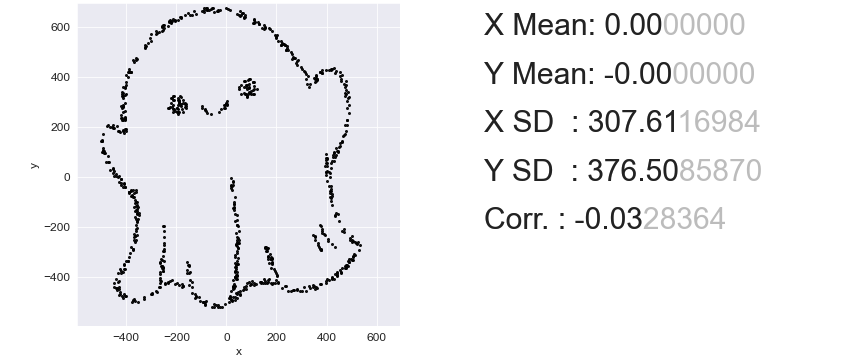
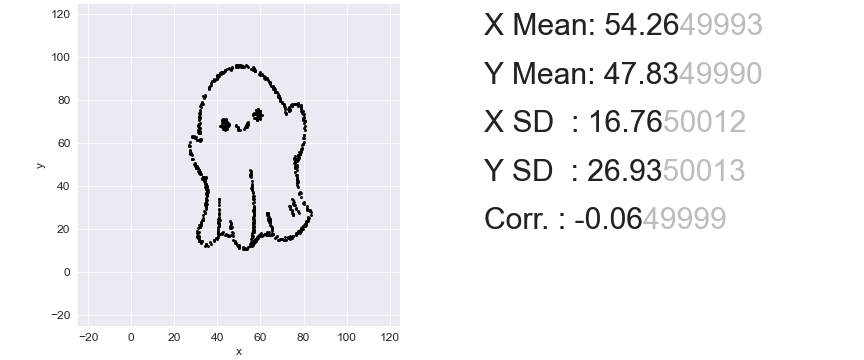

Enter an integer between 50 and 10000.

Target Summary Statistics

Same Stats, Different Graphs Made Simple and Fast by Linear Transformations
Give the page a few seconds to load the Python environment

